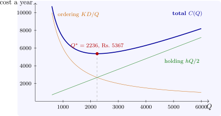

13.1 The economic order quantity
Demand occurs at a constant rate \(D\) units a year; each order costs \(K\) regardless of size and arrives instantly; holding a unit for a year costs \(h\) (often \(h = ic\), an interest rate \(i\) times the unit cost \(c\)); shortages are not allowed. With orders of size \(Q\), the stock falls from \(Q\) to \(0\) at rate \(D\) and is then replenished, a sawtooth with average level \(Q/2\), and \(D/Q\) orders are placed a year. The annual cost, excluding the purchase cost \(cD\) which does not depend on \(Q\), is \[ C(Q) = \frac {KD}Q + \frac {hQ}2 . \]
Theorem 13.1.1 (Economic order quantity). \(C\) is minimised by \(Q^* = \sqrt {2KD/h}\), where the ordering and holding costs are equal and \(C(Q^*) = \sqrt {2KDh}\). Moreover \[ \frac {C(Q)}{C(Q^*)} = \frac 12\Bigl (\frac Q{Q^*} + \frac {Q^*}Q\Bigr ) . \]
Proof. \(C'(Q) = -KD/Q^2 + h/2\) vanishes at \(Q^*\), and \(C''(Q) = 2KD/Q^3 > 0\), so \(C\) is convex and \(Q^*\) is its minimum. At \(Q^*\), \(KD/Q^* = \sqrt {KDh/2} = hQ^*/2\), so \(C(Q^*) = \sqrt {2KDh}\). Substituting \(KD = hQ^{*2}/2\) gives \(C(Q) = \frac h2(Q^{*2}/Q + Q)\), and dividing by \(hQ^*\) gives the ratio. □
The ratio formula shows that the total cost is flat near the optimum: ordering \(50\%\) too much raises the cost by only \(\frac 12(1.5 + \frac 1{1.5}) - 1 = 8.3\%\), and ordering twice the optimum raises it by \(25\%\). This robustness is why the EOQ is used even when its assumptions hold only roughly; errors in estimating \(K\), \(D\) or \(h\) enter \(Q^*\) only through a square root. If an order takes a lead time \(L\) to arrive, it is placed when the stock falls to the reorder point \(r = DL\).
Example 13.1.2. A firm uses \(D = 12\,000\) units a year, costing Rs. 12 each; an order costs \(K = \) Rs. 500, and holding costs \(20\%\) a year, so \(h = 2.4\). Then \(Q^* = \sqrt {2 \times 500 \times 12\,000/2.4} = 2236\) units, about \(5.4\) orders a year, at an annual ordering-and-holding cost of \(\sqrt {2 \times 500 \times 12\,000 \times 2.4} =\) Rs. 5367 (Figure 13). Ordering \(3000\) instead costs \(4.4\%\) more, and \(1500\) costs \(8.1\%\) more (Software 13.5.1).

Questions on this section
Stuck on something here? Ask below and it stays attached to this topic.